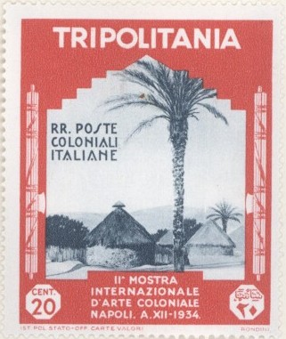

Tripolitanien
Return To Catalogue - Italy - Libya - Cyrenaica
Note: on my website many of the
pictures can not be seen! They are of course present in the
catalogue;
contact me if you want to purchase the catalogue.
Stamps of Italy with overprint 'TRIPOLITANIA' were issued from 1923 onwards. The first stamps with inscription 'TRIPOLITANIA' or 'TRIPOLI' were issued in 1926.
20 c green and brown 30 c red and brown 50 c violet and brown 1 L blue and brown
10 c green (fasces or axe with branches, red overprint) 30 c violet (fasces or axe with branches, red overprint) 50 c red (fasces or axe with branches) 1 L blue (eagle sitting on fasces) 2 L brown (eagle sitting on fasces) 5 L black and blue (aeroplanes and star, red overprint)
10 c red and black ('E PESCARENICO'; fishing village)
15 c green and black ('IL RESEGNO')
30 c black and grey ('ADDIO MONTI....')
50 c light brown and black ('QUEL RAMO DEL LAGO....')
1 L blue and black ('CASA MANZONI';
Manzoni's birthplace in Milan, overprint vertical)
5 L lilac and black (portrait of Manzoni in circle, overprint vertical)
Stamps of Italy, overprinted 'TRIPOLITANIA'
20 c + 10 c green and brown (S. Mario Maggiore) 30 c + 15 c brown (S. Giovanni di Laterano) 50 c + 25 c violet and brown (S.Paolo Furoi le Mura) 60 c + 30 c red and brown (S.Pietro in Vaticano) 1 L + 50 c blue and violet (the three knocks on the holy door, red overprint) 5 L red and violet (closing of the holy door, red overprint)
60 c red 1 L blue 1.25 L blue (1926)
20 c green (St. Francis has a vision in Jerusalem) 40 c violet (convent of St.Diamino) 60 c red (monastry and church in Assisi) 1.25 L blue (red overprint) 5 L + 2.50 L olive (red overprint)
5 c + 5 c brown 10 c + 5 c olive 20 c + 5 c green 40 c + 5 c red 60 c + 5 c orange 1 L + 5 c blue

Similar stamp for Somalia, Eritrea also issued similar stamps.
20 c + 5 c lilac and black
25 c + 5 c green and black
40 c + 10 c brown and black
60 c + 10 c brown and black
75 c + 20 c red and black
1.25 L + 20 c blue and black
1.25 L + 30 c violet and black ('ESPRESSO')
2.50 L + 100 c yellow and black ('EXPRES')
40 c + 20 c brown and black (castle of St.Angelo) 60 c + 30 c red and brown (aquaduct of Claudius) 1.25 L + 60 c blue and black (Capitol with Forum Romanum) 5 L + 2.50 L green and black (Porta del Popolo) Changed values and colours (1928) 30 c + 10 c red and black 50 c + 20 c lilac and black (red overprint) 1.25 L + 50 c brown and black (red overprint) 5 L + 2 L olive and black (red overprint) Changed values and colours (1930) 30 c + 10 c green (two shades on one stamp) 50 c + 10 c green and lilac 1.25 L + 30 c brown and red-brown 5 L + 1.50 L blue and green
20 c violet 50 c orange 1.25 L blue
30 c + 20 c red and black 50 c + 20 c green and black 1.25 L + 20 c red and black 1.75 L + 20 c blue and black 2.55 L + 50 c brown and black 5 L + 1 L violet and black
20 c + 5 c green 30 c + 5 c red 50 c + 10 c violet 1.25 L + 20 c blue
30 c + 20 c red and black 50 c + 20 c green and black 1.25 L + 20 c red and black 1.75 L + 20 c blue and black 2.55 L + 50 c brown and black 5 L + 1 L violet and black
20 c green (red overprint) 25 c orange (blue overprint) 50 c + 10 c red (blue overprint) 75 c + 15 c brown (red overprint) 1.25 L + 25 c lilac (design as 20 c, red overprint) 5 L + 1 L blue (design as 75 c, red overprint) 10 L + 2 L brown (red overprint)
30 c brown (bananas) 50 c violet (tobacco) 1.25 L blue 1.75 L + 20 c red 2.55 L + 45 c green 5 L + 1 L orange 10 L + 2 L lilac
20 c green 50 c + 10 c orange 1.25 L + 25 c red
20 c violet (red overprint) 25 c green (red overprint) 50 c black (red overprint) 1.25 L blue (red overprint) 5 L + 2 L red (blue overprint) Airmail 50 c lilac (blue overprint) 1 L blue (red overprint) 5 L + 2 L red (blue overprint)
50 c + 20 c brown 1.25 L + 20 c blue 1.75 L + 20 c green 2.55 L + 50 c violet 5 L + 1 L red
Airmail stamps with inscription 'ISTITUTO AGRICOLO COLONIALE ITALIANO' were issued in 1931.
15 c violet (red overprint) 20 c brown (blue overprint) 25 c green (red overprint) 30 c brown (blue overprint) 50 c lilac (red overprint) 75 c red (blue overprint) 1.25 L blue (red overprint) 5 L + 1.50 L lilac (red overprint) 10 L + 2.50 L brown (blue overprint) Airmail
50 c green (red overprint) 1 L red (blue overprint) 7.70 L + 1.30 L brown (red overprint) 9 L + 2 L grey (red overprint)
Ancient ruins with aeroplane 50 c red 60 c orange 75 c blue (1932) 80 c lilac Man on horse 1 L blue 1.20 L brown 1.50 L orange 5 L green Changed colour and overprinted 'PRIMO VOL DIRETTO ROMA BUENOS AYRES TRIMOTORE LOMBARDI-MAZZOTTI 1934 - XII' (1934)
2 L on 5 L brown 3 L on 5 L green 5 L yellow 10 L on 5 L red
These (unoverprinted) stamps exist with overprint 'LIBIA':
1.50 L with overprint 'LIBIA'
10 c brown 25 c green 50 c violet 1.25 L blue 1.75 L + 25 c red 2.75 L + 45 c orange 5 L + 1 L lilac 10 L + 2 L brown Express stamp 1.25 L + 20 c red Airmail 50 c blue
20 c brown (overprint 'TRIPOLITANIA' in blue) 25 c green (overprint 'TRIPOLITANIA' in red) 30 c brown (overprint 'TRIPOLITANIA' in blue) 50 c violet (overprint 'TRIPOLITANIA' in blue) 75 c black (overprint 'Tripolitania' in red) 1.25 L blue (overprint 'TRIPOLITANIA' in red) 5 L + 2.50 L brown (overprint 'Tripolitania' in blue)
50 c blue 80 c violet 1 L black 2 L green 5 L + 2 L red
10 c brown (tree) 20 c red-brown 25 c green (cactus) 30 c olvie (design as 20 c) 50 c violet (design as 10 c) 75 c red (statue) 1.25 L blue (tower) 1.75 L + 25 c brown (lion) 5 L + 1 L blue (camel) 10 L + 2 L lilac (dear) Airmail 50 c blue (aeroplane above sand dunes) 1 L red-brown (design as 50 c) 2 L + 1 L black (aeroplane above Tripolis) 5 L + 2 L red (design as 2 L)
10 c lilac (austriche) 25 c green (tree) 30 c red-brown (drummer) 50 c violet 1.25 L blue (eagle) 5 L + 1 L brown (leopard) 10 L + 2.50 L red Airmail 50 c green 75 c red 1 L blue 2 L + 50 c violet 5 L + 1 L red-brown 10 L + 2.50 L black
3 L brown 5 L violet 10 L green 12 L blue (design as 3 L) 15 L red (design as 5 L) 20 L black (design as 10 L)
19.75 L black and brown 44.75 L blue and green
10 c brown (girl carrying water) 20 c red (local man) 25 c green 30 c brown 50 c violet 75 c red (ruins) 1.25 L blue (design as 30 c)) Airmail 50 c blue (view of Tripolis) 75 c red (mosque) 5 L + 1 L green (design as 50 c) 10 L + 2 L violet (design as 75 c) 25 L + 3 L red-brown (camel) Airmail express stamps 2.25 L green 4.50 L + 1 L black Airmail stamps in changed colours and overprinted with 'CIRCUITO DELLE OASI TRIPOLI MAGGIO 1934-XII'
50 c red 75 c yellow 5 L + 1 L brown 10 L + 2 L blue (red overprint) 25 L + 3 L violet (red smaller overprint) Airmail express stamps in changed colours and overprinted with 'CIRCUITO DELLE OASI TRIPOLI MAGGIO 1934-XII' 2.25 L orange 4.50 L + 1 L red

Oasis 5 c green and brown 10 c brown and black 20 c red and grey 50 c violet and brown 60 c brown and grey 1.25 L blue and green Airmail 25 c blue and red (shadow of earoplane in desert) 50 c green and grey (design as 25 c) 75 c brown and red (design as 25 c) 80 c brown and olive (men on camels watching aeroplane) 1 L red and olive (design as 80 c) 2 L blue and brown (design as 80 c)
20 c + 10 c green 50 c + 10 c brown 75 c + 15 c red 80 c + 15 c dark-brown 1 L + 20 c red-brown 2 L + 20 c blue 3 L + 25 c violet 5 L + 25 c orange 10 L + 30 c violet 25 L + 2 L green
On 1930 issue 10 c brown
Stamps - Francobolli - Timbres-Poste - Briefmarken